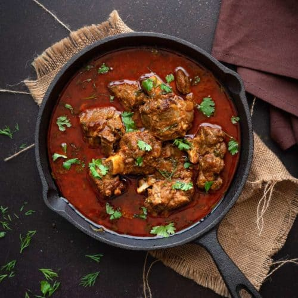

Mutton Curry

Description
Mutton curry (also referred to as kosha mangsho, lamb curry, or goat curry) is a dish that is prepared from goat meat (or sometimes lamb meat) and vegetables.
The dish is found in different variations across all states, countries and regions of South Asia.
Ingredients
- Mustard Oil
- Salt
- Masala
- Garlic Paste
- Onion
Steps
- Warm the mustard oil for 5-7 minute.
- Then put the chopped onion and cooked it for atleast 8-10 minute.
- Then put the garlic paste and cooked it for 9-10 minute.
- Add masala to it and stir for 3-4 minute and then put the mutton meat into it.
- Cook the meat for atleast 30 minute and then add water to it.
Return to top
Return to main page